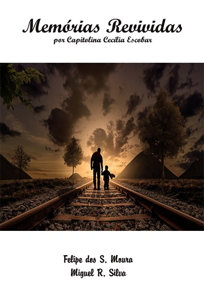
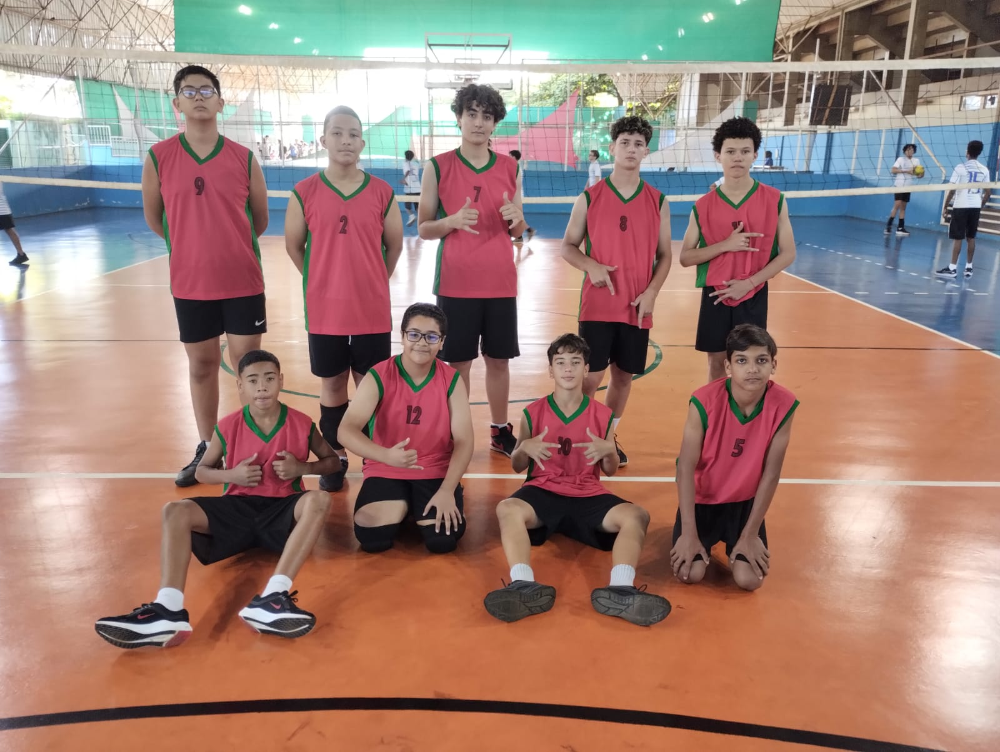
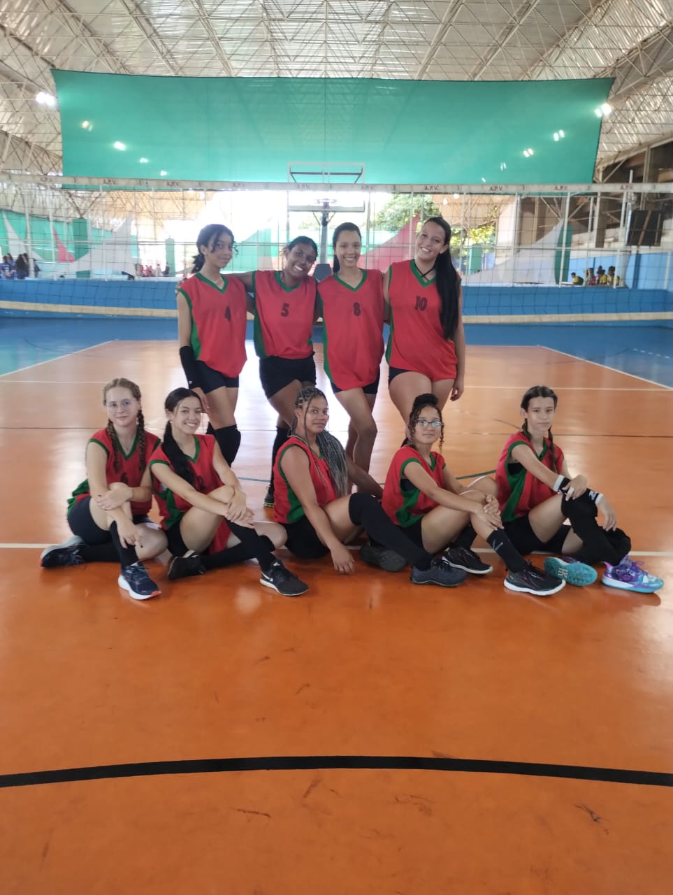
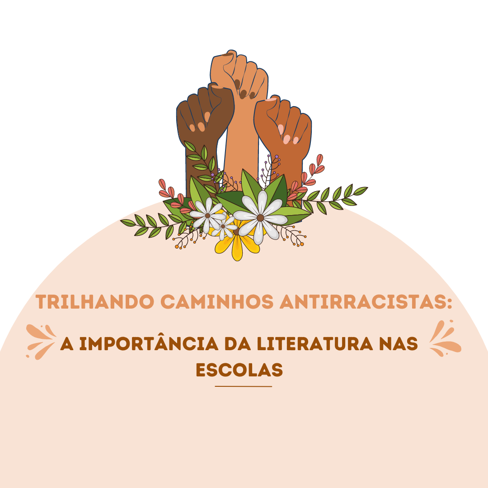
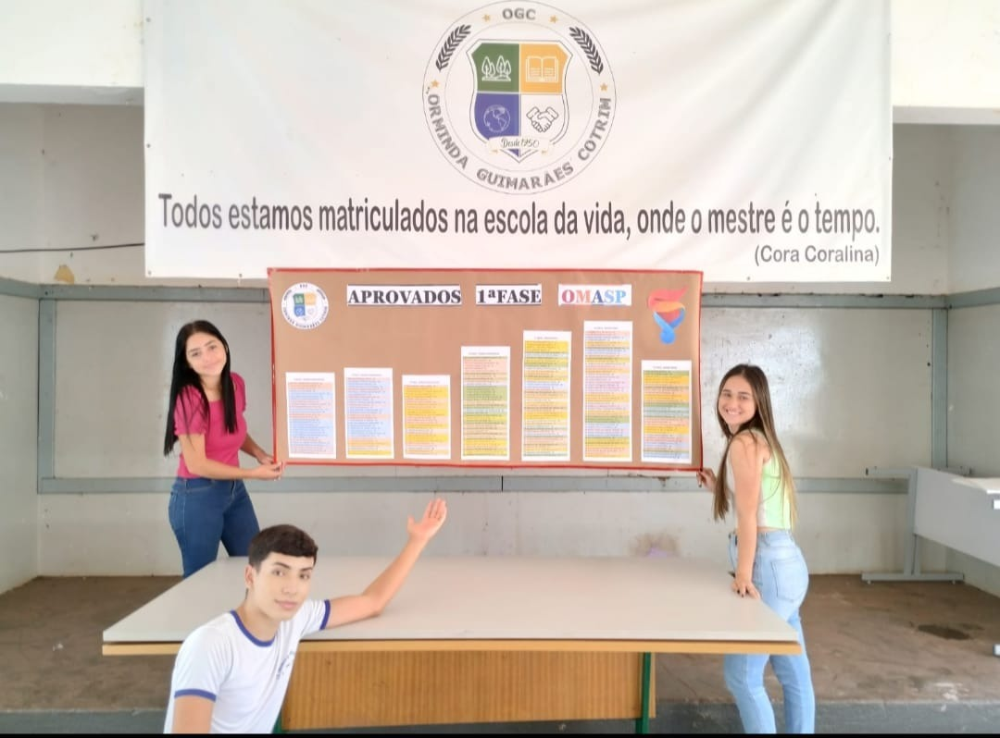
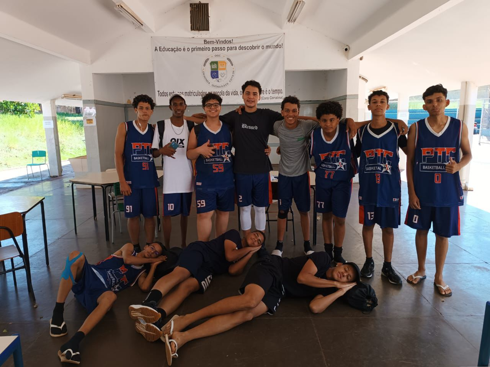

Escola Orminda Guimarães Cotrim e Grêmio Estudantil unidos em campanha de doação de agasalhos
A Escola Orminda Guimarães Cotrim, em parceria com seu Grêmio Estudantil, está promovendo uma nobre campanha de doação de agasalhos. O objetivo é arrecadar roupas e cobertores para ajudar aqueles...
Professor e aluno transformam desafio literário em livro publicado
Durante uma aula de literatura no 2ºA da Escola Orminda Guimarães Cotrim, o professor Miguel R. Silva lançou um desafio empolgante para os alunos: reescrever uma versão alternativa do clássico "Dom Casmurro", de Machado de Assis. O objetivo era explorar a criatividade dos estudantes e...

JEESP: Escola Orminda Guimarães Cotrim Celebra Vitória da Equipe Masculina de Futsal Mirim sobre Escola Isaías
Num confronto vibrante do JEESP, a equipe masculina de futsal mirim da Escola Orminda Guimarães Cotrim deixou sua marca ao superar a escola Isaías. Sob a tutela...
JEESP: Equipe de Vôlei Masculino Mirim da Escola Orminda Guimarães Cotrim, sob orientação do professor Guilherme, vence escola Mauricio Montecchi por 2 x 1
No dia 25/04, a equipe de vôlei masculino mirim da Escola Orminda Guimarães Cotrim escreveu um capítulo memorável em sua jornada esportiva ao conquistar uma vitória emocionante contra a escola Mauricio Montecchi no Campeonato...
JEESP: Equipe de Vôlei Feminino Infantil da Escola Orminda Guimarães Cotrim vence escola de Dumont no Campeonato JEESP em 30/04
Sob o comando inspirador dos professores Guilherme e Caio, a equipe de vôlei feminino infantil da Escola Orminda Guimarães Cotrim brilhou em um emocionante jogo contra...
Trilhando Caminhos Antirracistas: A Importância da Literatura nas Escolas
Na busca por uma educação mais inclusiva e igualitária, cada vez mais escolas estão adotando a trilha antirracista de livros em suas práticas pedagógicas. Essa abordagem visa não apenas combater o racismo estrutural, mas...
Alunos do 7ºA da Escola Orminda Guimarães Cotrim Propõem a Criação de Jornal Escolar durante Aula de Língua Portuguesa
No final do mês de abril, durante a aula de Língua Portuguesa, ministrada pela Professora Maria Luiza Ribeiro, os alunos do 7ºA da Escola Orminda Guimarães Cotrim tiveram uma ideia brilhante: criar um jornal escolar para compartilhar...
Alunos da Escola Orminda Guimarães Cotrim se Preparam para a 2ª Fase da Olimpíada de Matemática de São Paulo (OMASP)
Os alunos da Escola Orminda Guimarães Cotrim estão se preparando para enfrentar mais um desafio intelectual: a segunda fase da renomada Olimpíada de Matemática de São Paulo (OMASP). Com um total impressionante de 251 estudantes aprovados na primeira fase, entre os anos finais do ensino fundamental e o ensino...
Equipe da Escola Orminda Guimarães Cotrim, comandada pelos Professores Guilherme e Caio, Conquista Vitória no Basquetebol Infantil contra a Escola Winston Churchill no JEESP
No último dia 2 de maio, a equipe de basquetebol infantil da Escola Orminda Guimarães Cotrim brilhou nas quadras, conquistando uma vitória emocionante sobre a Escola Winston Churchill no Jogos Escolares do Estado de São Paulo...